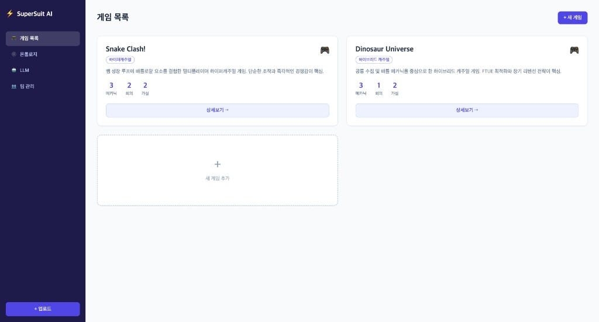
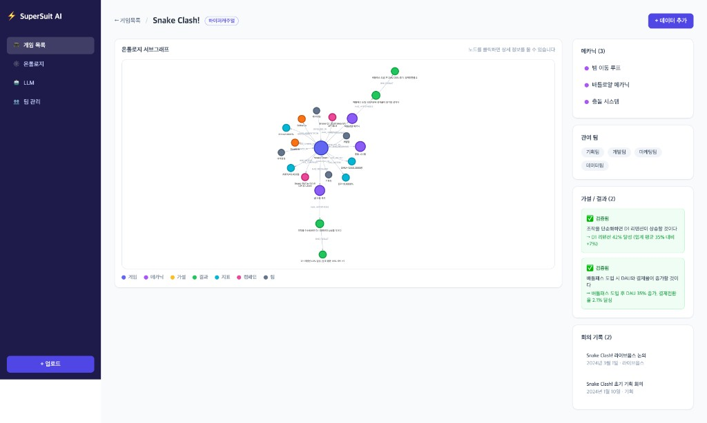
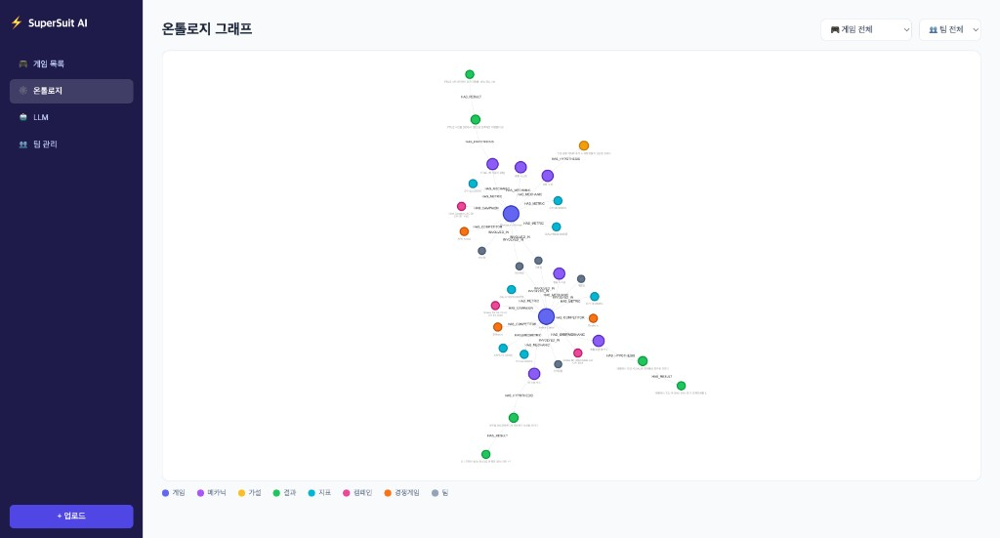
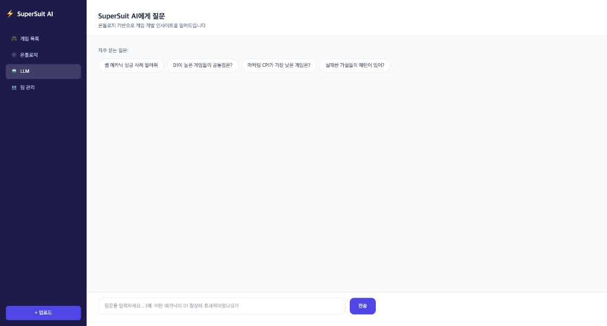
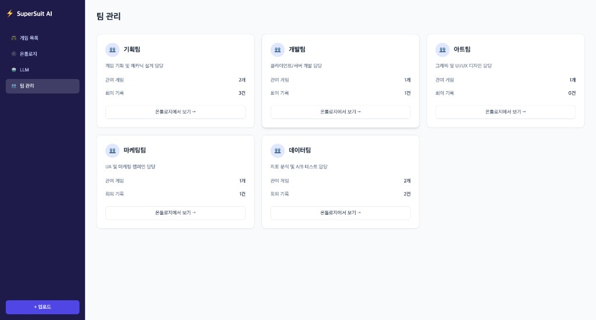
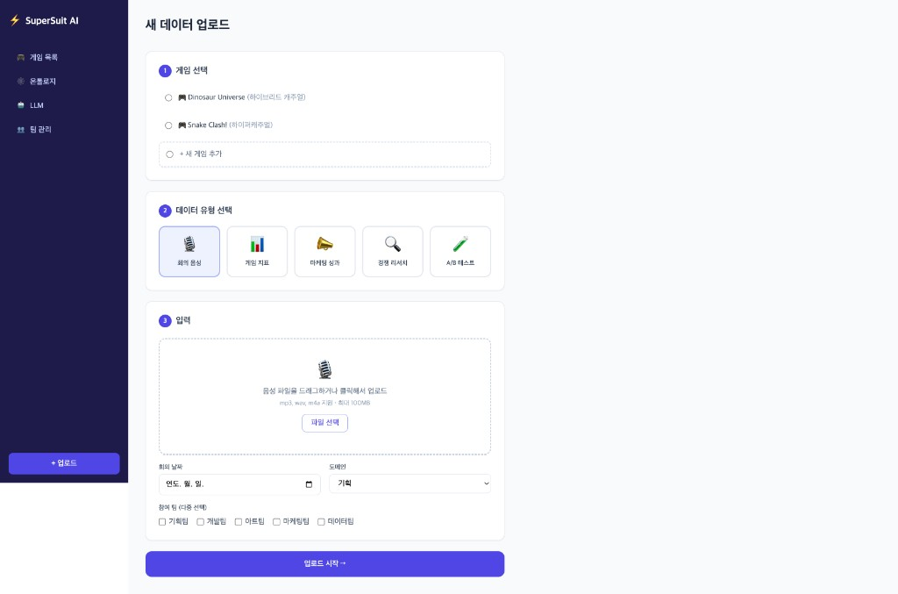

"울트론을 만드는 것이 아닌,
아이언맨 수트를 만드는 일"
게임 개발 조직의 집단 지식을 온톨로지로 축적하고,
AI로 누구나 접근할 수 있게 만드는 지식 관리 도구
게임 개발 조직에서 반복적으로 쌓이는 지식 — 메카닉 실험 결과, 가설 검증, 마케팅 성과, 경쟁사 분석 — 이 개인의 기억과 분산된 문서에만 존재하며, 다음 게임 기획 시 활용되지 못하는 지식 단절 문제.
"이런 메카닉, 전에 해봤나? 결과가 어땠나?"를 바로 알고 싶지만, 시니어 한 명의 머릿속에만 있는 상황
메카닉 실험 결과를 기억에서 꺼내 팀에 공유 → 바울 1인 의존도 높음
과거 실패 사례를 모르고 같은 방향 시도 → "전에 해봤는데 안 됐어요" 피드백
지표 데이터와 기획 논의가 연결되지 않아 통합 인사이트 생성 불가
과거 게임들의 데이터와 논의 결과가 있지만 다음 게임 기획에 활용이 안 됨. 시니어(바울)에게 직접 물어봐야만 알 수 있는 정보 존재.
회의에서 나온 인사이트, 가설, 결과가 체계적으로 기록되지 않아 회의 종료 후 소실됨. 같은 논의가 반복됨.
기획팀의 가설, 데이터팀의 지표, 마케팅팀의 캠페인 성과가 서로 연결되지 않아 통합 인사이트 생성 불가.
과거 게임들의 성공 패턴과 실패 패턴이 조직 자산으로 축적되지 않아 신규 게임 기획 시 반복 실수 발생.
단순한 도구/프로세스 문제가 아닌, 조직 지식이 개인에게 집중되어 AI로 민주화하지 못한 구조적 문제
AI가 구성원을 대체하는 것이 아니라, AI를 통해 한 명 한 명을 슈퍼히어로로 만들어 조직과 서비스를 변화시키는 AI 기반 지식 관리 도구
음성 파일(mp3, wav) → 한국어 텍스트 변환 (STT)
한국어 특화 STT. 게임 개발 전문 용어(D1, ARPU, 메카닉 등) 인식 정확도 최고
최신 플래그십 미니 모델. 한국어 처리 + JSON 구조화 정확도 최상
각 온톨로지 노드 텍스트 → 1536차원 벡터 변환. pgvector에 저장 후 의미 기반 유사도 검색
비용 대비 성능 최적. 한국어 임베딩 품질 우수
회의 음성과 게임 데이터가 자동으로 온톨로지에 쌓이고, LLM으로 과거 지식을 즉시 검색할 수 있다는 것을 실제 동작하는 Django 앱으로 검증
단순 코딩이 아닌, Cursor Subagents를 활용한 AI 협업 개발 방법론으로 구현했습니다. 기획자 · 디자이너 · 개발자 3개 Agent가 순차적으로 산출물을 생성하며, 각 Agent는 이전 Agent의 산출물을 참조 문서로 활용합니다.
.cursor/agents/product-manager-agent.md
.cursor/agents/product-designer-agent.md
.cursor/agents/fullstack-developer-agent.md

game_list

game_detail

ontology

ask

teams

upload
http://localhost:8000SuperSuit AI는 AI가 구성원을 대체하는 것이 아닌,
모든 구성원을 슈퍼히어로로 만드는 아이언맨 수트입니다.